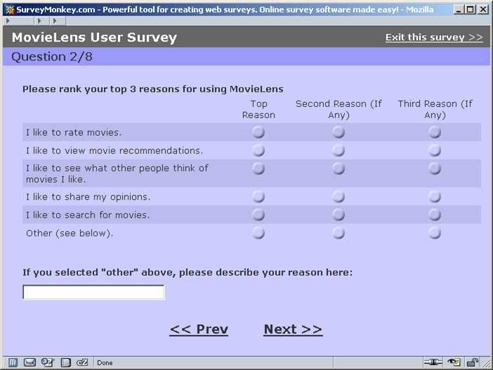
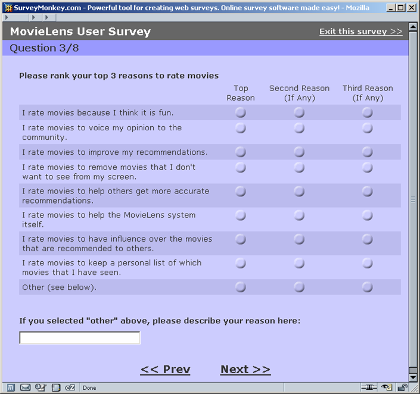
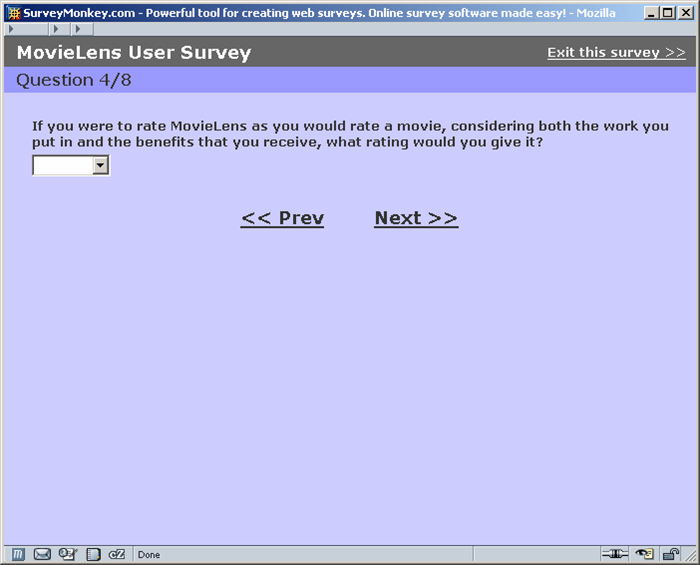
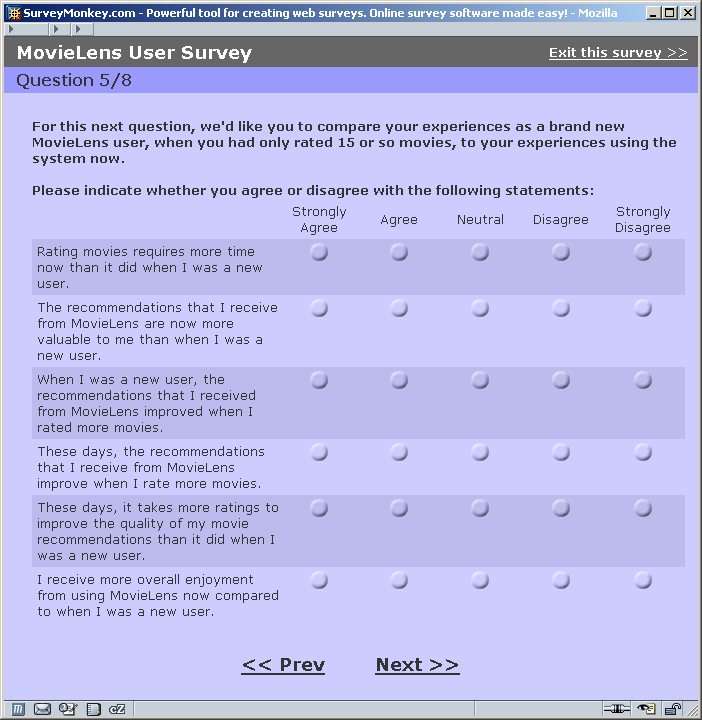
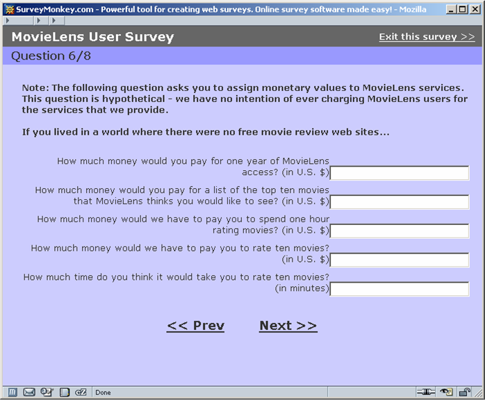
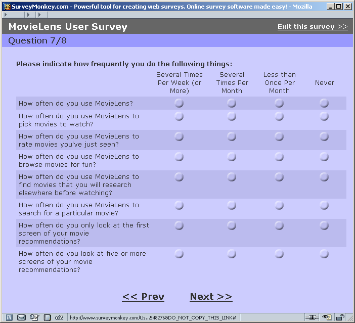
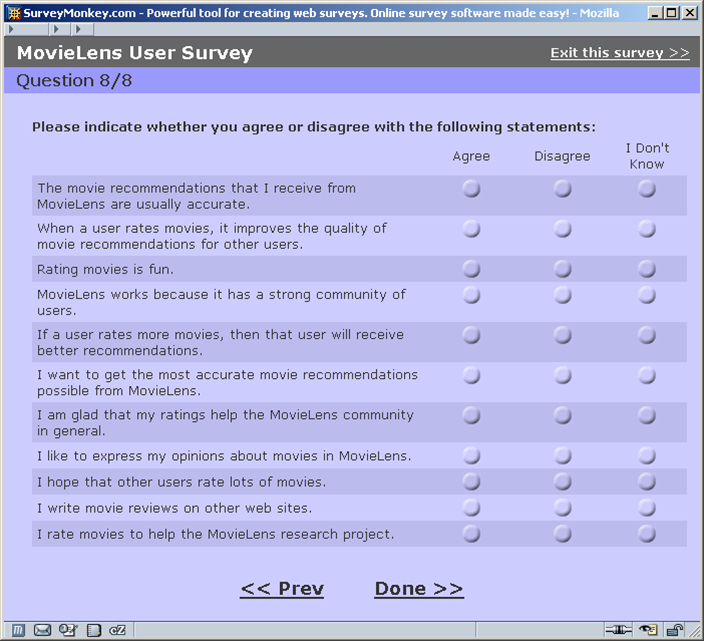

MovieLens User Survey
Conducted June-July 2004
Contents:
- Questions - screenshots of our user
survey. We used Survey
Monkey to administer the questions.
- Results
- Summarized Results - a powerpoint
presentation with a graphical display of the results
- Full Results - a csv spreadsheet with
the full survey results
If you want to learn more about this research project, visit the CommunityLab or the GroupLens web site. You
may also want to try out MovieLens.
If you have any questions, contact Max Harper - harper (at) cs.umn.edu.
Questions
Notes: 357 users took the survey. Two versions of the survey were used with different
orderings within questions.
Question 1) What is your email address? (picture omitted)
Question 2) Why do users use MovieLens?

Question 3) Why do users rate movies?

Question 4) How well do users like MovieLens?

Question 5) How do perceptions of the system change over time?

Question 6) What sorts of monetized values do user assign to their
activity in MovieLens?

Question 7) How frequently do users claim to do various MovieLens
activities?

Question 8) What else do users believe?
